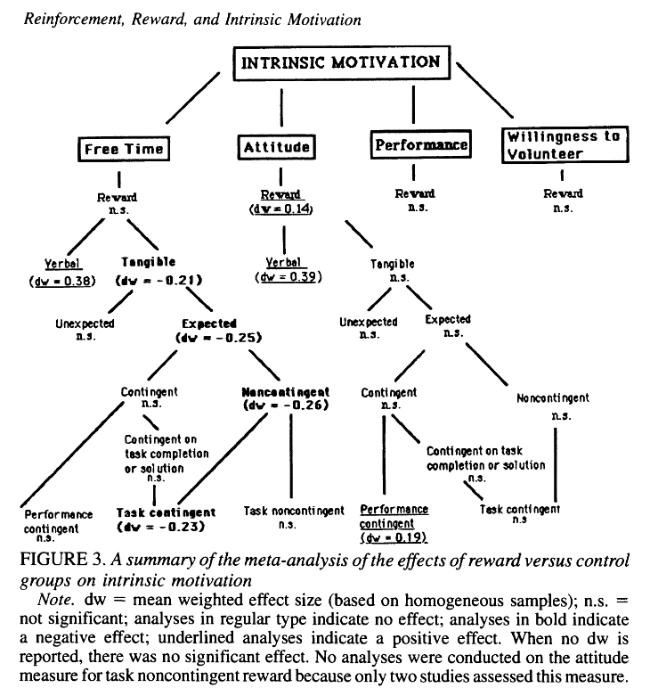

Cameron, Judy, and W. David Pierce. “Reinforcement, Reward, and Intrinsic Motivation: A Meta-Analysis.” Review of Educational Research 64, no. 3 (September 1994): 363–423. https://doi.org/10.3102/00346543064003363.
Abstract
This article reviews research on the effects of reinforcement/reward on intrinsic motivation. The main meta-analysis included 96 experimental studies that used between-groups designs to compare rewarded subjects to nonrewarded controls on four measures of intrinsic motivation. Results indicate that, overall, reward does not decrease intrinsic motivation. When interaction effects are examined, findings show that verbal praise produces an increase in intrinsic motivation. The only negative effect appears when expected tangible rewards are given to individuals simply for doing a task. Under this condition, there is a minimal negative effect on intrinsic motivation as measured by time spent on task following the removal of reward. A second analysis was conducted on five studies that used within-subject designs to evaluate the effects of reinforcement on intrinsic motivation; results suggest that reinforcement does not harm an individual’s intrinsic motivation.
Main Arguments:
This meta-analysis of 96 experimental studies in the literature find no support for the undermining (crowding out) effect that reward/reinforcement have on intrinsic motivation.
Overall, the results show that reward does not significantly affect intrinsic motivation as measured by free time on task following removal of reward, by performance during the free-time period, or by subjects’ willingness to volunteer for future projects without reward.
Different types of reward:
- Subjects rewarded with verbal praise or positive feedback show significant greater intrinsic motivation than control group.
- Undermining effects are only found on the free time measure (time spent on following task with reward removed), when expected non-contingent tangible rewards were removed. i.e., only when rewards are offered simply for task engagement, regardless of performance. Such effects are not observed on self-reported attitude, performance, and willingness to volunteer measure.
- Unexpected reward and (performance) contingent reward do not harm intrinsic motivation.

Research with single-subject,repeated measures designs find no effect of reinforcement on intrinsic motivation.
In general, the findings indicate that, rewarded people are not less willing to work on activities and they do not display a less favorable attitude toward tasks than people who do not receive rewards.